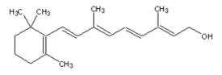

Vitamina A
Alcool liposolubil (solubil în grăsimi sau uleiuri), prezent în pești și, în special, în uleiurile din ficat de pește, dar și în legume ca morcovul. Se mai numește antixeroftalmică sau vitamina creșterii:

RETINOL (C20H30O)
Rolul vitaminei A este acela de a influența creșterea organismelor tinere și de a menține acuritatea ochilor.
Oamenii au nevoie de vitamina A în cantități mici (1 mg pe zi), fiind toxică în special pentru ficat, în cantități mari și putând fi distrusă prin expunerea la căldură, lumină sau aer. Totodată, carența de vitamina A conduce, la om, la scăderea acuității vizuale, a adaptării la întuneric sau la uscarea pielii.